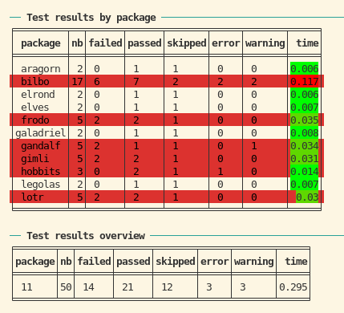

Testing and checking packages with srcpkgs
Source:vignettes/testing_and_checking.Rmd
testing_and_checking.RmdI will demonstrate srcpkgs using a dummy collection of source packages: https://github.com/kforner/srcpkgs_lotr_demo It consists currently in 11 related packages, with internal dependencies. The dependencies are implemented by a mix of Imports, Imports with namespace imports and Depends.
listing the LOTR collection of packages with srcpkgs
library(srcpkgs)
print(names(get_srcpkgs()))## [1] "aragorn" "bilbo" "elrond" "elves" "frodo" "galadriel"
## [7] "gandalf" "gimli" "hobbits" "legolas" "lotr"
# cat(clitable::cli_table(as.data.frame(get_srcpkgs())), sep = "\n")testing the collection
no tests yet
The LOTR collection does not come with any test. Let’s see what happens then…
## ## ── Test results by package ─────────────────────────────────────────────────────## ╒═════════╤══╤══════╤══════╤═══════╤═════╤═══════╤════╕
## │ package │nb│failed│passed│skipped│error│warning│time│
## ╞═════════╪══╪══════╪══════╪═══════╪═════╪═══════╪════╡
## │ aragorn │ 0│ 0 │ 0 │ 0 │ 0 │ 0 │ 0 │
## │ bilbo │ 0│ 0 │ 0 │ 0 │ 0 │ 0 │ 0 │
## │ elrond │ 0│ 0 │ 0 │ 0 │ 0 │ 0 │ 0 │
## │ elves │ 0│ 0 │ 0 │ 0 │ 0 │ 0 │ 0 │
## │ frodo │ 0│ 0 │ 0 │ 0 │ 0 │ 0 │ 0 │
## │galadriel│ 0│ 0 │ 0 │ 0 │ 0 │ 0 │ 0 │
## │ gandalf │ 0│ 0 │ 0 │ 0 │ 0 │ 0 │ 0 │
## │ gimli │ 0│ 0 │ 0 │ 0 │ 0 │ 0 │ 0 │
## │ hobbits │ 0│ 0 │ 0 │ 0 │ 0 │ 0 │ 0 │
## │ legolas │ 0│ 0 │ 0 │ 0 │ 0 │ 0 │ 0 │
## │ lotr │ 0│ 0 │ 0 │ 0 │ 0 │ 0 │ 0 │
## ╘═════════╧══╧══════╧══════╧═══════╧═════╧═══════╧════╛## ## ── Test results overview ───────────────────────────────────────────────────────## ╒═══════╤══╤══════╤══════╤═══════╤═════╤═══════╤════╕
## │package│nb│failed│passed│skipped│error│warning│time│
## ╞═══════╪══╪══════╪══════╪═══════╪═════╪═══════╪════╡
## │ 11 │ 0│ 0 │ 0 │ 0 │ 0 │ 0 │ 0 │
## ╘═══════╧══╧══════╧══════╧═══════╧═════╧═══════╧════╛
##
## SUCCESSSo no tests (nb == 0) but the testing was successful
since no test failed…
adding dummy tests to the packages
Let’s add programmatically some dummy tests to our packages.
add_dummy_test_to_srcpkg <- function(srcpkg, with_failures = TRUE, with_errors = TRUE, with_warnings = TRUE) {
withr::local_dir(srcpkg$path)
dir.create("tests/testthat", recursive = TRUE, showWarnings = FALSE)
.write_test <- function(name, code, test = name) {
writeLines(sprintf(r"-----{
test_that("%s", {
%s
})
}-----", name, code), sprintf("tests/testthat/test-%s.R", test))
}
.write_test("success", "expect_true(TRUE)")
if (with_failures) {
.write_test("failure", "expect_true(FALSE)")
.write_test("mixed", "expect_true(FALSE);expect_true(TRUE)")
}
.write_test("skip", 'skip("skipping");expect_true(FALSE)')
if (with_errors) .write_test("errors", 'expect_true(TRUE);stop("Arghh");expect_true(TRUE)')
if (with_warnings) .write_test("warning", 'expect_true(FALSE);warning("watch out");expect_true(FALSE)')
if (with_failures && with_errors)
writeLines(r"-----{
test_that("misc1", {
expect_true(FALSE)
expect_true(TRUE)
})
test_that("misc2", {
expect_true(FALSE)
skip("skipping")
})
test_that("misc3", {
expect_true(TRUE)
expect_true(TRUE)
})
test_that("misc4", {
expect_true(TRUE)
warning("fais gaffe")
stop("aie")
expect_true(TRUE)
})
}-----", "tests/testthat/test-misc.R")
writeLines(sprintf(r"-----{
library(testthat)
library(%s)
test_check("%s")
}-----", srcpkg$package, srcpkg$package), "tests/testthat.R")
}
i <- 0
for (pkg in get_srcpkgs()) {
add_dummy_test_to_srcpkg(pkg, i %% 3 == 1, i %% 7 == 1, i %% 5 == 1)
i <- i + 1
}testing
Now let’s test again.
# N.B: we use the silent testthat reporter because we only want to get the results as tables
test_results <- pkgs_test(reporter = "silent")
print(test_results)## ## ── Test results by package ─────────────────────────────────────────────────────## ╒═════════╤══╤══════╤══════╤═══════╤═════╤═══════╤═════╕
## │ package │nb│failed│passed│skipped│error│warning│ time│
## ╞═════════╪══╪══════╪══════╪═══════╪═════╪═══════╪═════╡
## │ aragorn │ 2│ 0 │ 1 │ 1 │ 0 │ 0 │0.021│
## │ bilbo │17│ 6 │ 7 │ 2 │ 2 │ 2 │0.429│
## │ elrond │ 2│ 0 │ 1 │ 1 │ 0 │ 0 │0.008│
## │ elves │ 2│ 0 │ 1 │ 1 │ 0 │ 0 │0.007│
## │ frodo │ 5│ 2 │ 2 │ 1 │ 0 │ 0 │ 0.05│
## │galadriel│ 2│ 0 │ 1 │ 1 │ 0 │ 0 │0.007│
## │ gandalf │ 5│ 2 │ 1 │ 1 │ 0 │ 1 │0.063│
## │ gimli │ 5│ 2 │ 2 │ 1 │ 0 │ 0 │0.051│
## │ hobbits │ 3│ 0 │ 2 │ 1 │ 1 │ 0 │0.023│
## │ legolas │ 2│ 0 │ 1 │ 1 │ 0 │ 0 │0.007│
## │ lotr │ 5│ 2 │ 2 │ 1 │ 0 │ 0 │0.049│
## ╘═════════╧══╧══════╧══════╧═══════╧═════╧═══════╧═════╛## ## ── Test results overview ───────────────────────────────────────────────────────## ╒═══════╤══╤══════╤══════╤═══════╤═════╤═══════╤═════╕
## │package│nb│failed│passed│skipped│error│warning│ time│
## ╞═══════╪══╪══════╪══════╪═══════╪═════╪═══════╪═════╡
## │ 11 │50│ 14 │ 21 │ 12 │ 3 │ 3 │0.715│
## ╘═══════╧══╧══════╧══════╧═══════╧═════╧═══════╧═════╛
##
## FAILEDNote that in markdown we can not have the ANSI colors and formatting. Here’s a screenshot 
using the test results
The test results are stored as a pkgs_test object, which
is a list named after the packages, of pkg_test objects
which are a subclass of testthat_results. You can
manipulate them with S3 methods:
-
as.data.frame()- converts the results to a data frame with one row per package -
summary()- converts the results to a one-row data frame that summarizes the results for the collection of packages -
as.logical()- tells if the overall testing of the collection was successful -
print()- prints the results as pretty tables
These S3 methods are also implemented for pkg_test
objects.
print(as.data.frame(test_results))## package nb failed passed skipped error warning time
## aragorn aragorn 2 0 1 1 0 0 0.021
## bilbo bilbo 17 6 7 2 2 2 0.429
## elrond elrond 2 0 1 1 0 0 0.008
## elves elves 2 0 1 1 0 0 0.007
## frodo frodo 5 2 2 1 0 0 0.050
## galadriel galadriel 2 0 1 1 0 0 0.007
## gandalf gandalf 5 2 1 1 0 1 0.063
## gimli gimli 5 2 2 1 0 0 0.051
## hobbits hobbits 3 0 2 1 1 0 0.023
## legolas legolas 2 0 1 1 0 0 0.007
## lotr lotr 5 2 2 1 0 0 0.049## package nb failed passed skipped error warning time
## 1 11 50 14 21 12 3 3 0.715
print(as.logical(test_results))## [1] FALSE
print(test_results$bilbo)## ## ── Test results by test for package bilbo ──────────────────────────────────────## ╒═══════╤═══════╤══╤══════╤══════╤═══════╤═════╤═══════╤═══════════════════╕
## │ file │ test │nb│failed│passed│skipped│error│warning│ time │
## ╞═══════╪═══════╪══╪══════╪══════╪═══════╪═════╪═══════╪═══════════════════╡
## │ errors│ errors│ 1│ 0 │ 1 │ FALSE │ TRUE│ 0 │ 0.024 │
## │failure│failure│ 1│ 1 │ 0 │ FALSE │FALSE│ 0 │ 0.201 │
## │ misc │ misc1 │ 2│ 1 │ 1 │ FALSE │FALSE│ 0 │ 0.0270000000000001│
## │ misc │ misc2 │ 2│ 1 │ 0 │ TRUE │FALSE│ 0 │ 0.0259999999999998│
## │ misc │ misc3 │ 2│ 0 │ 2 │ FALSE │FALSE│ 0 │0.00800000000000001│
## │ misc │ misc4 │ 2│ 0 │ 1 │ FALSE │ TRUE│ 1 │ 0.0449999999999999│
## │ mixed │ mixed │ 2│ 1 │ 1 │ FALSE │FALSE│ 0 │ 0.0289999999999999│
## │ skip │ skip │ 1│ 0 │ 0 │ TRUE │FALSE│ 0 │0.00300000000000011│
## │success│success│ 1│ 0 │ 1 │ FALSE │FALSE│ 0 │0.00499999999999989│
## │warning│warning│ 3│ 2 │ 0 │ FALSE │FALSE│ 1 │ 0.0609999999999999│
## ╘═══════╧═══════╧══╧══════╧══════╧═══════╧═════╧═══════╧═══════════════════╛## ## ── Test results by file for package bilbo ──────────────────────────────────────## ╒═══════╤══╤══════╤══════╤═══════╤═════╤═══════╤═══════════════════╕
## │ file │nb│failed│passed│skipped│error│warning│ time │
## ╞═══════╪══╪══════╪══════╪═══════╪═════╪═══════╪═══════════════════╡
## │ errors│ 1│ 0 │ 1 │ 0 │ 1 │ 0 │ 0.024 │
## │failure│ 1│ 1 │ 0 │ 0 │ 0 │ 0 │ 0.201 │
## │ misc │ 8│ 2 │ 4 │ 1 │ 1 │ 1 │ 0.106 │
## │ mixed │ 2│ 1 │ 1 │ 0 │ 0 │ 0 │ 0.0289999999999999│
## │ skip │ 1│ 0 │ 0 │ 1 │ 0 │ 0 │0.00300000000000011│
## │success│ 1│ 0 │ 1 │ 0 │ 0 │ 0 │0.00499999999999989│
## │warning│ 3│ 2 │ 0 │ 0 │ 0 │ 1 │ 0.0609999999999999│
## ╘═══════╧══╧══════╧══════╧═══════╧═════╧═══════╧═══════════════════╛## ## ── Test results overview for package bilbo ─────────────────────────────────────## ╒══╤══════╤══════╤═══════╤═════╤═══════╤═════════════════╕
## │nb│failed│passed│skipped│error│warning│ time │
## ╞══╪══════╪══════╪═══════╪═════╪═══════╪═════════════════╡
## │17│ 6 │ 7 │ 2 │ 2 │ 2 │0.428999999999999│
## ╘══╧══════╧══════╧═══════╧═════╧═══════╧═════════════════╛
print(as.data.frame(test_results$lotr))## file test nb failed passed skipped error warning time
## 1 failure failure 1 1 0 FALSE FALSE 0 0.020
## 2 mixed mixed 2 1 1 FALSE FALSE 0 0.022
## 3 skip skip 1 0 0 TRUE FALSE 0 0.003
## 4 success success 1 0 1 FALSE FALSE 0 0.004## file nb failed passed skipped error warning time
## 1 failure 1 1 0 0 0 0 0.020
## 2 mixed 2 1 1 0 0 0 0.022
## 3 skip 1 0 0 1 0 0 0.003
## 4 success 1 0 1 0 0 0 0.004
print(as.logical(test_results$aragorn))## [1] TRUEchecking the collection
Checking is very similar to testing except that it takes much longer!
fixing the collection: declare testthat as dependency
.fix_description <- function(path, lst) {
df <- read.dcf(path, all = TRUE)
df2 <- utils::modifyList(df, lst)
write.dcf(df2, path)
}
for (pkg in get_srcpkgs()) {
.fix_description(file.path(pkg$path, "DESCRIPTION"), list(Suggests = "testthat"))
}checking the packages
check_results <- pkgs_check(quiet = TRUE)## ℹ Loading aragorn
## ℹ Loading bilbo
## ℹ Loading elrond
## ℹ Loading elves
## ℹ Loading frodo
## ℹ Loading galadriel
## ℹ Loading gandalf
## ℹ Loading gimli
## ℹ Loading hobbits
## ℹ Loading legolas
## ℹ Loading lotr
print(check_results)##
## ── Check results by package ────────────────────────────────────────────────────## ╒═════════╤══════╤════════╤═════╤════╕
## │ package │errors│warnings│notes│time│
## ╞═════════╪══════╪════════╪═════╪════╡
## │ aragorn │ 0 │ 0 │ 2 │8.63│
## │ bilbo │ 1 │ 0 │ 2 │ 8.8│
## │ elrond │ 0 │ 0 │ 2 │8.43│
## │ elves │ 0 │ 0 │ 2 │8.62│
## │ frodo │ 1 │ 0 │ 2 │8.61│
## │galadriel│ 0 │ 0 │ 2 │ 8.4│
## │ gandalf │ 1 │ 0 │ 2 │ 8.5│
## │ gimli │ 1 │ 0 │ 2 │8.51│
## │ hobbits │ 1 │ 0 │ 4 │8.69│
## │ legolas │ 0 │ 0 │ 2 │ 8.3│
## │ lotr │ 1 │ 0 │ 4 │9.21│
## ╘═════════╧══════╧════════╧═════╧════╛##
## ── Check results overview ──────────────────────────────────────────────────────## ╒═══════╤══════╤════════╤═════╤════╕
## │package│errors│warnings│notes│time│
## ╞═══════╪══════╪════════╪═════╪════╡
## │ 11 │ 6 │ 0 │ 26 │94.7│
## ╘═══════╧══════╧════════╧═════╧════╛
##
## FAILEDusing the check results
The check results are stored as a pkgs_check object,
which is a list named after the packages, of pkg_check
objects which are a subclass of rcmdcheck.
As with pkgs_test results, you can manipulate them with
S3 methods:
-
as.data.frame()- converts the results to a data frame with one row per package -
summary()- converts the results to a one-row data frame that summarizes the results for the collection of packages -
as.logical()- tells if the overall testing of the collection was successful -
print()- prints the results as pretty tables
print(as.data.frame(check_results))## package errors warnings notes time
## aragorn aragorn 0 0 2 8.630147
## bilbo bilbo 1 0 2 8.800797
## elrond elrond 0 0 2 8.430192
## elves elves 0 0 2 8.618615
## frodo frodo 1 0 2 8.607013
## galadriel galadriel 0 0 2 8.401060
## gandalf gandalf 1 0 2 8.496756
## gimli gimli 1 0 2 8.507365
## hobbits hobbits 1 0 4 8.689744
## legolas legolas 0 0 2 8.304031
## lotr lotr 1 0 4 9.207761## package errors warnings notes time
## 1 11 6 0 26 94.69348
print(as.logical(check_results))## [1] FALSE
print(check_results$bilbo)## ── R CMD check results ────────────────────────────────────────── bilbo 0.1 ────
## Duration: 8.8s
##
## ❯ checking tests ...
## See below...
##
## ❯ checking for hidden files and directories ... NOTE
## Found the following hidden files and directories:
## .SRCPKGS_MD5
## These were most likely included in error. See section ‘Package
## structure’ in the ‘Writing R Extensions’ manual.
##
## ❯ checking DESCRIPTION meta-information ... NOTE
## License components which are templates and need '+ file LICENSE':
## MIT
##
## ── Test failures ───────────────────────────────────────────────── testthat ────
##
## >
## > library(testthat)
## > library(bilbo)
## >
## > test_check("bilbo")
## [ FAIL 8 | WARN 2 | SKIP 2 | PASS 7 ]
##
## ══ Skipped tests (2) ═══════════════════════════════════════════════════════════
## • skipping (2): test-misc.R:8:7, test-skip.R:3:7
##
## ══ Warnings ════════════════════════════════════════════════════════════════════
## ── Warning (test-misc.R:16:7): misc4 ───────────────────────────────────────────
## fais gaffe
## ── Warning (test-warning.R:3:26): warning ──────────────────────────────────────
## watch out
##
## ══ Failed tests ════════════════════════════════════════════════════════════════
## ── Error (test-errors.R:3:25): errors ──────────────────────────────────────────
## Error in `eval(code, test_env)`: Arghh
## ── Failure (test-failure.R:3:7): failure ───────────────────────────────────────
## FALSE is not TRUE
##
## `actual`: FALSE
## `expected`: TRUE
## ── Failure (test-misc.R:3:7): misc1 ────────────────────────────────────────────
## FALSE is not TRUE
##
## `actual`: FALSE
## `expected`: TRUE
## ── Failure (test-misc.R:7:7): misc2 ────────────────────────────────────────────
## FALSE is not TRUE
##
## `actual`: FALSE
## `expected`: TRUE
## ── Error (test-misc.R:17:7): misc4 ─────────────────────────────────────────────
## Error in `eval(code, test_env)`: aie
## ── Failure (test-mixed.R:3:7): mixed ───────────────────────────────────────────
## FALSE is not TRUE
##
## `actual`: FALSE
## `expected`: TRUE
## ── Failure (test-warning.R:3:7): warning ───────────────────────────────────────
## FALSE is not TRUE
##
## `actual`: FALSE
## `expected`: TRUE
## ── Failure (test-warning.R:3:47): warning ──────────────────────────────────────
## FALSE is not TRUE
##
## `actual`: FALSE
## `expected`: TRUE
##
## [ FAIL 8 | WARN 2 | SKIP 2 | PASS 7 ]
## Error: Test failures
## Execution halted
##
## package errors warnings notes time
## 1 bilbo 1 0 2 8.800797
print(as.data.frame(check_results$lotr))## package errors warnings notes time
## 1 lotr 1 0 4 9.207761## package errors warnings notes time
## 1 lotr 1 0 4 9.207761
print(as.logical(check_results$aragorn))## [1] TRUE